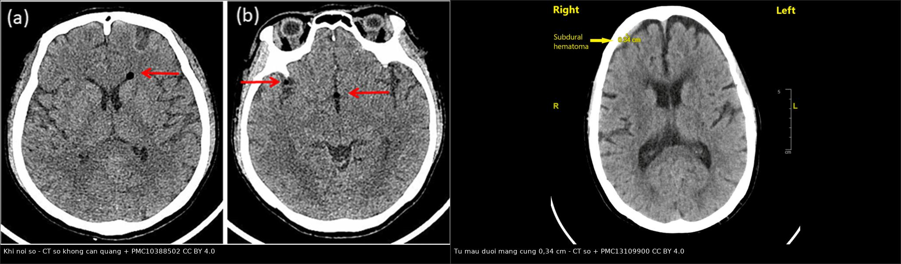
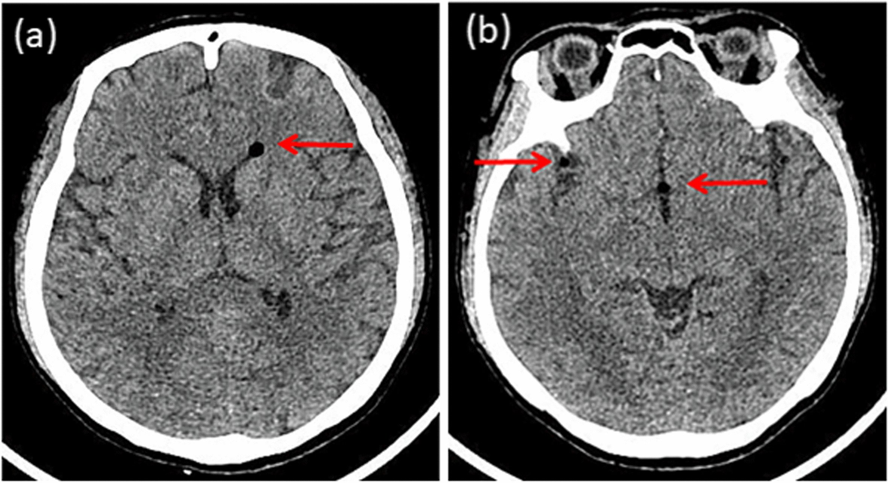
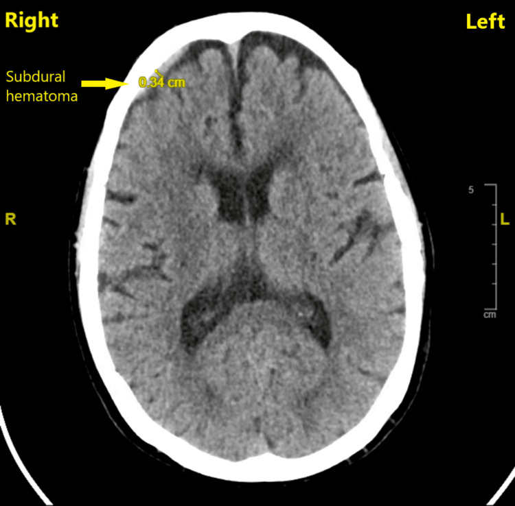
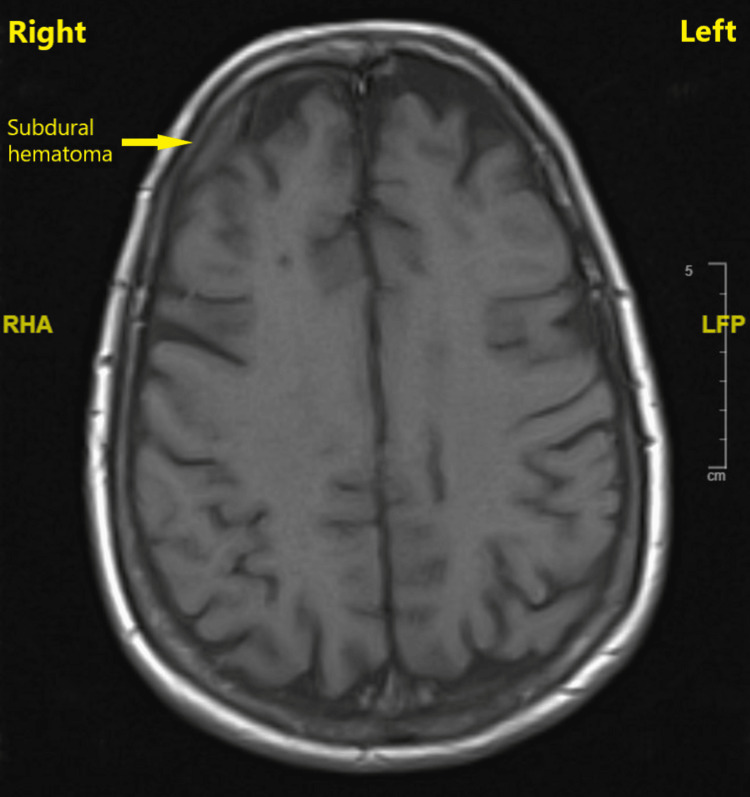
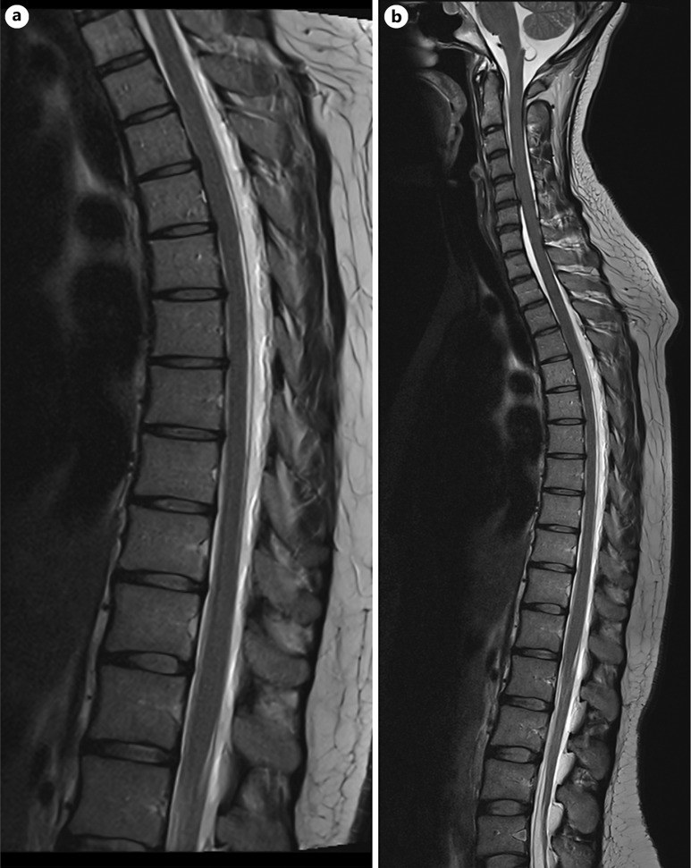
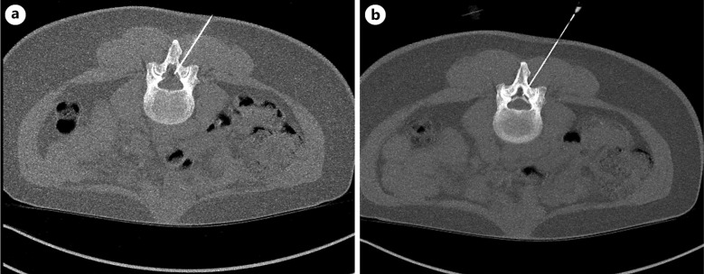

3014 — Đau đầu sau chọc dò tủy sống (PDPH): khi nào chụp, khi nào blood patch, biến chứng nội sọ
Tags: pattern:dau-dau-the-dung pattern:ro-dich-nao-tuy pattern:tu-mau-duoi-mang-cung pattern:khi-noi-so pattern:liec-day-vi vung:cot-song-that-lung vung:noi-so score:ICHD-3 protocol:MRI-so-nao-tuong-phan protocol:blood-patch
Mức chắc chắn (certainty): tổng hợp y văn (literature synthesis) — khung số liệu lấy từ tổng quan PDPH 2026 (PMC13148558), cập nhật xử trí sản khoa (PMC13221105), cohort 285 lần chọc dò (PMC9281177), cohort 1305 ca mổ lấy thai (PMC13429089) và 3 ca nguyên văn có ảnh (PMC10388502 khí nội sọ; PMC13109900 tụ máu dưới màng cứng; PMC13472611 liệt dây VI + blood patch dưới CT). Nhãn này vì bài ghép nhiều nguồn, không phải một ca duy nhất.
Bài này là phần “biến chứng sau thủ thuật” của 3012 – Áp-xe sau gây tê ngoài màng cứng và 3013 – Đuôi ngựa sau mổ cột sống. Điểm khác biệt cốt lõi: sau chọc dò, đau đầu là triệu chứng chính, hình ảnh nội sọ thường bình thường — nên điều trị theo lâm sàng, và chỉ chụp khi có cờ đỏ hoặc đau kéo dài.
1. Tổng quan bệnh học – cơ chế hình ảnh
- Chuỗi sự kiện: chọc thủng màng cứng → rò dịch não tủy (DNT) liên tục ra khoang ngoài màng cứng → giảm thể tích DNT → theo học thuyết Monro–Kellie (hộp sọ kín: não + máu + DNT có tổng thể tích cố định) → giãn tĩnh mạch và tăng thể tích máu nội sọ bù trừ, đồng thời não tụt xuống (brain sag) vì mất lực nổi của DNT. Chính kéo căng màng não và các dây thần kinh sọ — không phải “viêm màng não” — tạo ra cơn đau.
- TẠI SAO đau theo tư thế: khi đứng, cột dịch não tủy tạo gradient áp lực thủy tĩnh dương giữa khoang dưới nhện thắt lưng và nội sọ, làm rò nhanh hơn và tụt não nhiều hơn; khi nằm, gradient giảm → đau dịu trong ≤ 15 phút. Đây là lý do tiêu chuẩn chẩn đoán dùng thời gian 15 phút, không dùng “đau khi đứng” chung chung.
- TẠI SAO liệt dây VI (abducens): dây VI có đường chạy nội sọ dài nhất, đi qua ống Dorello và bị căng dọc theo bờ xương đá khi não tụt; dây không có vỏ myelin dày như các dây khác nên dễ tổn thương do kéo. Vì vậy liệt VI là dấu hiệu gián tiếp của tụt não, không phải tổn thương thân não.
- TẠI SAO tụ máu dưới màng cứng (SDH): não tụt kéo căng tĩnh mạch cầu nối (bridging veins) từ vỏ não vào xoang màng cứng → rách → máu tụ. Nguy cơ tăng ở người già (não teo, tĩnh mạch căng sẵn), người chống đông, và khi rò kéo dài — đây là lý do PDPH ở người ≥ 50 tuổi tuy hiếm nhưng nặng hơn.
- TẠI SAO có khí nội sọ (pneumocephalus): kỹ thuật mất lực cản bằng không khí (loss of resistance to air) bơm khí vào khoang ngoài màng cứng; khi màng cứng thủng, khí đi vào khoang dưới nhện và ngược dòng lên nội sọ. Khí hấp thụ tia rất mạnh nên trên CT có HU âm sâu — ca PMC10388502 đo −982 đến −464 HU.
- Vật lý tín hiệu — phân biệt dịch, máu, khí trên CT không cản quang:
- Khí: −1000 đến −400 HU, đen tuyệt đối, thường ở khoang dưới nhện/não thất.
- DNT/dịch màng não (hygroma): 0–15 HU, đồng đậm độ dịch não tủy, hình liềm.
- Máu tụ cấp (< 48 giờ): 60–80 HU, tăng đậm độ so với nhu mô; bán cấp giảm dần về đồng đậm độ nên dễ bỏ sót trên CT muộn → phải MRI.
- Trên MRI: màng não dày ngấm thuốc đối xứng (pachymeningeal enhancement), tụt não (sagging), giãn xoang tĩnh mạch, dịch dưới màng cứng — bộ dấu hiệu của hạ áp lực nội sọ.
- Số liệu định lượng phải nhớ:
- Tần suất theo kim: kim cắt (cutting) 10–40%; kim đầu bút chì (pencil-point) 25–27G: < 3%; chọc dò ngoài ý muốn (UDP) bằng kim Tuohy cỡ lớn: 50–85%; kỹ thuật dural puncture epidural (DPE): 0,5–2%.
- Chọc dò tủy sống chẩn đoán (cohort 285 ca): PDPH 29,5%, khởi phát trung bình 1,7 ± 0,8 ngày, kéo dài 2,4 ± 2,1 ngày.
- Gây tê tủy sống mổ lấy thai (1305 ca): PDPH 1,5%; 56% khởi phát trong 24–48 giờ.
- Tiêu chuẩn ICHD-3: đau đầu khởi phát trong 5 ngày sau chọc dò; nặng lên trong 15 phút khi ngồi/đứng và dịu trong 15 phút khi nằm; kèm ≥ 1 trong cứng cổ, ù tai, giảm thính lực, sợ ánh sáng, buồn nôn; tự khỏi trong 2 tuần hoặc sau blood patch.
- Blood patch ngoài màng cứng (EBP): thành công 70–90%; 26,8% tái phát sau EBP, trong đó 60% cần EBP lần 2; thể tích 15–20 mL (tối ưu quanh 20 mL), thực hiện khi thất bại điều trị bảo tồn 24–48 giờ.
- Siêu âm đường kính bao dây thần kinh thị (ONSD): ΔONSD ≥ 0,40 mm sau EBP dự báo cải thiện sớm với AUC 0,96 (95% CI 0,87–1,00), độ nhạy 100%, độ đặc hiệu 83% — công cụ theo dõi, không thay đánh giá lâm sàng.
2. Mẫu hình + chẩn đoán phân biệt theo vị trí (gamut)
- Mẫu hình cốt lõi: đau đầu thế đứng + tiền sử chọc dò trong 5 ngày + không dấu thần kinh khu trú. Nếu đúng mẫu hình này và không cờ đỏ → chẩn đoán lâm sàng, không cần chụp.
- Gamut theo “đồng hồ” sau chọc dò:
- 0–48 giờ: PDPH đơn thuần; khí nội sọ (nếu dùng kỹ thuật không khí); tụ máu ngoài màng cứng cột sống (đau lưng + yếu chân — xem 3013).
- 48 giờ–2 tuần: PDPH kéo dài; tụ máu dưới màng cứng (đau đổi tính chất, không còn đứng rõ); huyết khối xoang tĩnh mạch não (CVST); viêm màng não (sốt, cứng cổ, rối loạn ý thức).
- > 2 tuần: rò DNT dai dẳng; giả màng não (pseudomeningocele); CVST muộn; SDH mạn; đau đầu do nguyên nhân khác (tăng huyết áp thai kỳ, migraine).
- Gamut theo “hình thái đau đầu” — dùng để phát hiện ca không điển hình:
- Đau thế đứng thuần, đổi ngay khi nằm: PDPH.
- Đau thế đứng + đau đầu kiểu tăng áp lực (nôn, nhìn mờ): khí nội sọ hoặc SDH — hai biến chứng có cơ chế ngược nhau nhưng cùng biểu hiện.
- Đau liên tục, không giảm khi nằm, kèm liệt VI/song thị: hạ áp lực nội sọ nặng hoặc CVST — phải chụp.
- Đau + sốt + cứng cổ: viêm màng não — chọc dò lại và kháng sinh, không blood patch trước khi loại trừ nhiễm trùng.
- Gamut theo bối cảnh sản khoa: PDPH phải phân biệt với tiền sản giật/sản giật, CVST, xuất huyết nội sọ, viêm màng não, migraine — vì tất cả đều có thể xảy ra trong 6 tuần hậu sản.
3. Bảng so sánh phân biệt (ma trận đối chiếu)
| Thực thể (entity) | Hình ảnh/lâm sàng điển hình | Chốt vào (rule-in) | Chốt loại (rule-out) | Gợi ý xác nhận |
|---|---|---|---|---|
| PDPH đơn thuần | Đau thế đứng, khởi phát ≤ 5 ngày, dịu ≤ 15 phút khi nằm; CT/MRI bình thường | Quan hệ thời gian với chọc dò + đau thế đứng điển hình + không cờ đỏ | Đau liên tục không đổi tư thế + dấu thần kinh khu trú → không phải PDPH đơn thuần | Chẩn đoán lâm sàng theo ICHD-3; không chụp nếu không cờ đỏ |
| Tụ máu dưới màng cứng | Hình liềm dưới màng cứng, 60–80 HU (cấp) hoặc đồng đậm độ (bán cấp); đau mất tính thế đứng | Hình liềm + tăng đậm độ trên CT + đau đổi tính chất | Khí HU âm → khí nội sọ; dịch 0–15 HU → hygroma, không phải máu | CT không cản quang cấp; MRI T1/T2 nếu CT muộn/âm tính mà lâm sàng nặng |
| Huyết khối xoang tĩnh mạch não | Đau liên tục, tăng khi nằm/nghiêng, có thể co giật, nhìn mờ; không giảm rõ khi nằm | Khuyết thuốc trong xoang trên CTV/MRV + đau không kiểu thế đứng | CTV bình thường + đau thế đứng điển hình → PDPH | CTV/MRV (không dùng CT thường để loại trừ); D-dimer hỗ trợ |
| Khí nội sọ | Khí HU âm trong khoang dưới nhện/não thất; đau thế đứng hoặc đau kiểu tăng áp lực | HU âm (−1000 đến −400) + tiền sử kỹ thuật bơm khí | Không có khí trên CT → loại trừ | CT không cản quang; theo dõi vì khí tự hấp thụ |
| Viêm màng não sau chọc dò | Sốt, cứng cổ, sợ ánh sáng, rối loạn ý thức; dịch não tủy bạch cầu tăng, protein tăng, glucose giảm | Hội chứng nhiễm trùng + dịch não tủy viêm | Không sốt, dịch não tủy bình thường → loại trừ | Chọc dò lại (nếu an toàn) + cấy; kháng sinh sớm |
| Đau đầu do tiền sản giật | Đau đầu + HA ≥ 140/90, protein niệu, phù, tăng men gan; thường không liên quan tư thế | HA cao + protein niệu + thay đổi thị lực | HA bình thường, đau thế đứng thuần → ít nghĩ tiền sản giật | Xét nghiệm tiền sản giật, theo dõi sản khoa |
| Hạ áp lực nội sọ tự phát (SIH) | Cùng hình ảnh MRI như PDPH nhưng không có tiền sử chọc dò; có thể có dịch tủy sống rò tự phát | MRI hạ áp lực + không tiền sử thủ thuật | Có tiền sử chọc dò trong 5 ngày → PDPH | MRI sọ + tủy có tương phản; tìm rò bằng MR/CT myelography |

Trái: khí nội sọ (mũi tên) — HU âm trong khoang dưới nhện. Phải: tụ máu dưới màng cứng 0,34 cm bán cầu phải, không lệch đường giữa. Hai ca khác nhau, cùng một cơ chế: mất thể tích dịch não tủy. Ảnh nguyên bản, ghép letterbox. Nguồn: PMC10388502 (CC BY 4.0) và PMC13109900 (CC BY 4.0).4. Protocol chụp + hệ phân độ/điểm chuẩn hóa
- Ai chụp — không chụp thường quy: PDPH điển hình, không cờ đỏ → không cần CT/MRI. Chỉ chụp khi có một trong các cờ đỏ:
- Đau không còn kiểu thế đứng, đau tăng dần, đau về đêm.
- Sốt, cứng cổ, rối loạn ý thức, co giật (nhiễm trùng/CVST).
- Dấu thần kinh khu trú: liệt dây sọ (đặc biệt VI), yếu chi, rối loạn ngôn ngữ, nhìn đôi.
- Không cải thiện sau 1 tuần điều trị bảo tồn hoặc tái phát sau EBP.
- Chấn thương đầu kèm theo, chống đông, hoặc ≥ 50 tuổi (nguy cơ SDH cao hơn).
- Chọn modality theo câu hỏi lâm sàng:
- CT không cản quang: bước đầu để loại trừ chảy máu/SDH và phát hiện khí nội sọ; nhanh, nhưng âm tính không loại trừ CVST và kém nhạy với SDH bán cấp.
- MRI sọ có tương phản (gadolinium): chuẩn để thấy màng não dày ngấm thuốc, tụt não, giãn xoang, dịch dưới màng cứng — nên làm khi đau kéo dài, CT âm tính, hoặc nghi SIH.
- MRI tủy sống T2 + MR myelography: tìm vị trí rò và dịch ngoài màng cứng (ca PMC13472611 thấy dịch ngoài màng cứng lan dọc trên T2 sagittal).
- CTV/MRV: bắt buộc khi nghi CVST — CT thường không đủ.
- CT myelography: khi MRI chống chỉ định hoặc cần định vị rò chính xác trước can thiệp.
- Blood patch — chỉ định và kỹ thuật:
- Chỉ định: PDPH trung bình–nặng hoặc thất bại điều trị bảo tồn 24–48 giờ, có ảnh hưởng chức năng (không ngồi dậy được, không chăm con được).
- Thể tích: 15–20 mL máu tự thân (tối ưu quanh 20 mL), tiêm tại hoặc sát tầng chọc dò; có thể dùng hướng dẫn CT/fluoroscopy khi khó hoặc khi cần nhắm đúng vị trí rò (ca PMC13472611: EBP dưới CT ngày 15 hậu sản, khỏi hoàn toàn trong 2 tuần).
- Hiệu quả: 70–90%; tái phát 26,8%, trong đó 60% cần lần 2.
- Theo dõi hiệu quả khách quan: ΔONSD ≥ 0,40 mm sau 2 giờ (AUC 0,96) — hữu ích khi bệnh nhân khó mô tả đau, nhưng chưa thay thế đánh giá lâm sàng.
- Điều trị bảo tồn (trước và song song): nằm nghỉ, hydrat hóa, paracetamol/NSAID, caffeine; tránh vận động mạnh, rặn, nâng vật nặng trong 4–6 tuần; không dùng steroid thường quy.
- Sơ đồ xử trí:
flowchart TD
A[Đau đầu sau chọc dò ≤ 5 ngày] --> B{Đau thế đứng điển hình<br/>và không cờ đỏ?}
B -->|Có| C[Chẩn đoán PDPH - điều trị bảo tồn]
C --> D{Cải thiện sau 24-48 giờ?}
D -->|Có| E[Tiếp tục bảo tồn - theo dõi]
D -->|Không| F[Blood patch 15-20 mL]
F --> G{Khỏi sau 24 giờ?}
G -->|Không| H[Xem lại chẩn đoán - MRI/CTV<br/>cân nhắc blood patch lần 2]
B -->|Không| I[CT không cản quang cấp]
I --> J{Có bất thường?}
J -->|Máu/khí| K[Xử trí theo tổn thương - hội chẩn]
J -->|Bình thường nhưng còn cờ đỏ| L[MRI sọ có tương phản + MRI tủy<br/>CTV/MRV nếu nghi huyết khối]
5. Biến thể bình thường và cạm bẫy
- “Đau đầu thế đứng = PDPH” là bẫy nguy hiểm nhất: khí nội sọ (ca PMC10388502) và SDH đều có thể biểu hiện đau thế đứng; hỏi thêm kỹ thuật chọc (không khí hay nước muối), đau đầu có đổi tính chất không, và có dấu thần kinh mới không.
- Khí nội sọ có thể tự khỏi — ca PMC10388502 khỏi hoàn toàn sau 2 tuần với nằm nghỉ, hydrat hóa, giảm đau, oxy; không cần can thiệp nếu không có dấu tăng áp lực nội sọ.
- SDH ở người già có thể rất mỏng (0,34 cm) và không lệch đường giữa, nên CT ban đầu dễ bị đọc là bình thường; nếu đau kéo dài, MRI hoặc CT lặp lại mới thấy rõ.
- CT bình thường không loại trừ CVST: phải CTV/MRV; đau kiểu không thế đứng là manh mối.
- Blood patch không phải “chữa khỏi ngay mọi đau đầu”: 26,8% tái phát; nếu đau không đổi tư thế sau EBP, phải xem lại chẩn đoán thay vì làm EBP lần 3 mù quáng.
- Chống chỉ định/ổ nhiễm: không blood patch khi nghi nhiễm trùng tại chỗ chọc, nhiễm trùng huyết, sốt chưa rõ nguyên nhân — có thể đưa vi khuẩn vào khoang ngoài màng cứng (xem 3012).
- Biến chứng của chính EBP: đau lưng thoáng qua, chậm nhịp tim thoáng qua, co giật (đã báo cáo trong hạ áp lực nội sọ có SDH mạn — PMC13224276), tăng thể tích/SDH; biến chứng thần kinh vĩnh viễn rất hiếm nhưng phải tư vấn trước.
- Cạm bẫy “satisfaction of search” ở sản khoa: thấy PDPH rồi bỏ qua tiền sản giật/CVST vì đã có “chẩn đoán giải thích được”; luôn kiểm HA, protein niệu, dấu thần kinh trước khi gắn nhãn.
6. Tự lượng giá — Blind Quiz
Ca 1 — Sản phụ 24 tuổi, đau đầu thế đứng 2 giờ sau sinh thường, có gây tê ngoài màng cứng.

- Gợi ý: gây tê ngoài màng cứng bằng kỹ thuật mất lực cản với không khí; đau đầu thế đứng + cứng cổ + thay đổi thính giác.
- Câu hỏi: Bất thường trên CT là gì? Đậm độ đo được bao nhiêu? Vì sao đau đầu vẫn kiểu thế đứng? Xử trí?
Bấm để hiện đáp án (findings + chẩn đoán)
- Dấu hiệu: nhiều ổ giảm đậm độ rất mạnh (khí) trong khoang dưới nhện/nhu mô, mũi tên đỏ; tác giả đo −982 đến −464 HU → khí nội sọ (pneumocephalus), không phải nhồi máu.
- Chẩn đoán: PDPH kết hợp khí nội sọ sau gây tê ngoài màng cứng dùng kỹ thuật không khí. Đau vẫn kiểu thế đứng vì vẫn còn rò DNT; khí là “bệnh thứ hai” chồng lên.
- Xử trí: nằm nghỉ, hydrat hóa, giảm đau, oxy; ca này khỏi hoàn toàn sau 2 tuần. Không cần chọc dẫn lưu khí nếu không có dấu tăng áp lực nội sọ.
- Bài học: đau thế đứng sau gây tê không đồng nghĩa chỉ có hạ áp lực; CT sọ giúp phát hiện khí.
- Nguồn ảnh: BMC Pregnancy Childbirth 2023 (PMC10388502), Fig. 1, CC BY 4.0.
Ca 2 — Nữ 73 tuổi, đau đầu thế đứng sau gây tê tủy sống 25G pencil-point, không đỡ khi điều trị bảo tồn.

- Gợi ý: mổ thay khớp háng; đau đầu thế đứng dai dẳng; không dấu thần kinh khu trú.
- Câu hỏi: Mô tả tổn thương? Đo kích thước? Vì sao người già dễ bị? Bước tiếp theo?
Bấm để hiện đáp án (findings + chẩn đoán)
- Dấu hiệu: dải tăng đậm độ hình liềm dưới màng cứng bán cầu phải, đo 0,34 cm, không lệch đường giữa (mũi tên vàng).
- Chẩn đoán: tụ máu dưới màng cứng (SDH) do rò DNT kéo dài — biến chứng hiếm nhưng nặng ở người cao tuổi.
- Vì sao người già: não teo → tĩnh mạch cầu nối căng sẵn và khoảng dưới nhện rộng hơn → chỉ cần tụt não nhẹ là rách tĩnh mạch.
- Xử trí: ca này theo dõi sát (SDH mỏng, không lệch đường giữa) và blood patch vì PDPH không đỡ; đau hết ngay, SDH không xấu thêm. Nếu SDH dày/lệch đường giữa hoặc tri giác xấu → hội chẩn ngoại thần kinh.
- Đối chiếu MRI 6 giờ sau — tổn thương không tiến triển, xác nhận máu tụ mạn tính ổn định:

- Nguồn ảnh: Cureus 2026;18(3) (PMC13109900), Fig. 1–2, CC BY 4.0.
Ca 3 — Nữ 33 tuổi, ngày 12 hậu sản: đau đầu thế đứng, cứng cổ, ù tai và nhìn đôi ngang.

- Gợi ý: gây tê ngoài màng cứng giảm đau chuyển dạ; CT sọ ban đầu bình thường; triệu chứng dai dẳng dù điều trị bảo tồn.
- Câu hỏi: Dấu hiệu trên MRI tủy? Vì sao nhìn đôi ngang? Can thiệp nào được thực hiện?
Bấm để hiện đáp án (findings + chẩn đoán)
- Dấu hiệu: dịch tăng tín hiệu T2 ngoài màng cứng lan dọc mặt sau ống sống (a: thắt lưng; b: toàn trục ngực–thắt lưng) — tương ứng rò DNT dai dẳng. MRI sọ cho thấy dấu hiệu hạ áp lực nội sọ; không có tụ dịch dưới màng cứng lớn.
- Nhìn đôi ngang: liệt dây VI do kéo căng khi não tụt (đường chạy nội sọ dài nhất).
- Can thiệp: blood patch ngoài màng cứng có hướng dẫn CT tại vị trí rò, ngày 15 hậu sản → khỏi hoàn toàn trong 2 tuần.

- Bài học: PDPH kèm liệt dây sọ là cờ đỏ → cần MRI sọ + tủy có tương phản, và EBP nhắm vị trí rò khi thất bại bảo tồn.
- Nguồn ảnh: Case Rep Ophthalmol 2026;17:837–844 (PMC13472611), Fig. 2–3, CC BY-NC 4.0 (nguyên bản).
Bài liên quan chéo
- 3012 – Áp-xe ngoài màng cứng sau gây tê ngoài màng cứng
- 3013 – Hội chứng đuôi ngựa sau mổ cột sống
- 258 – Áp-xe ngoài màng cứng do lây từ ổ loét tì đè
- 249 – Rò động mạch cảnh–xoang hang sau chấn thương
Ảnh
- Tên file:
3014_*.jpg; composite:images/composite_bien-chung-noi-so.jpg(tạo bằngtools/make_composite.py, letterbox, không crop). - Nguồn + giấy phép từng ảnh:
images/CREDITS.md; link gốc trongsources.md. - Ảnh PMC13472611 là CC BY-NC 4.0 — dùng cho giáo dục phi thương mại, giữ nguyên bản.
Không dùng để chẩn đoán độc lập khi chưa có người hướng dẫn.